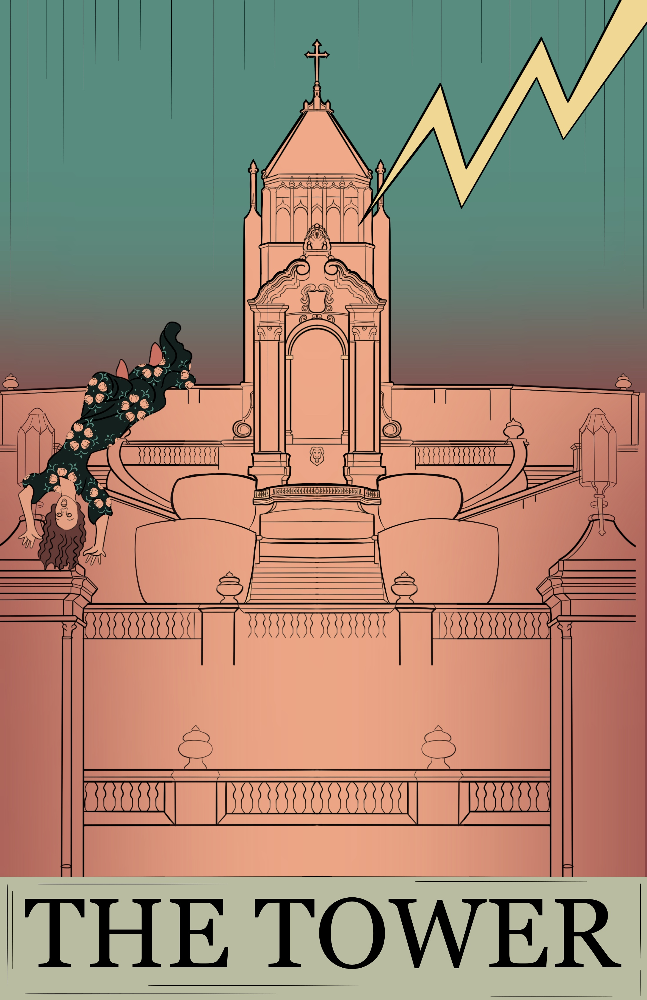
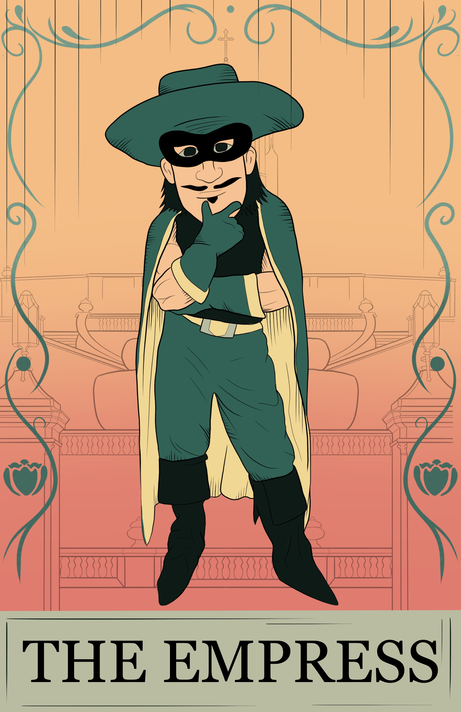
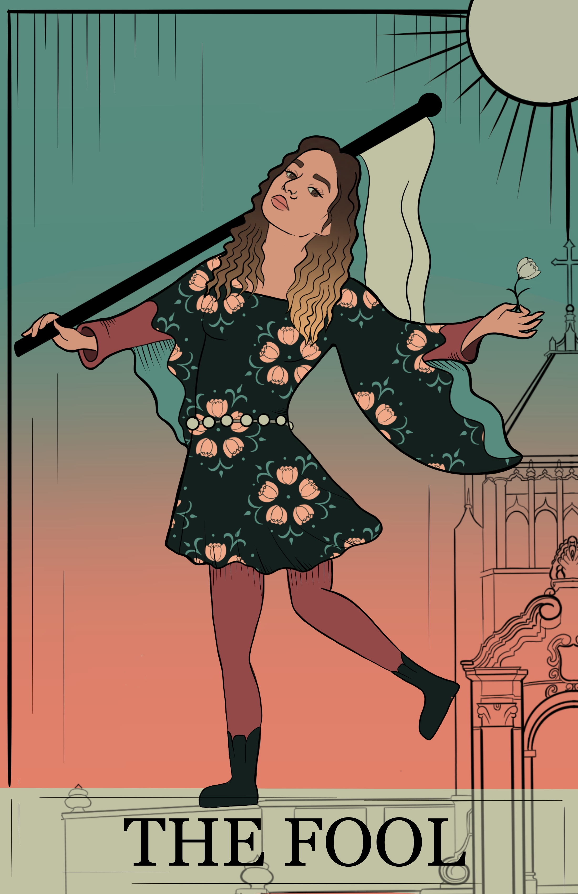
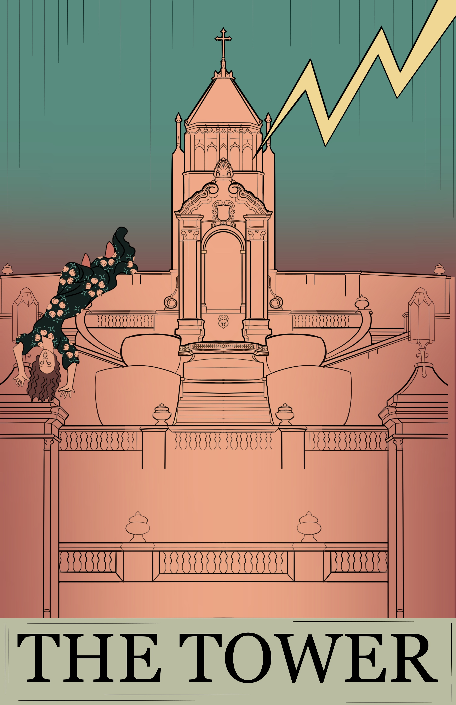
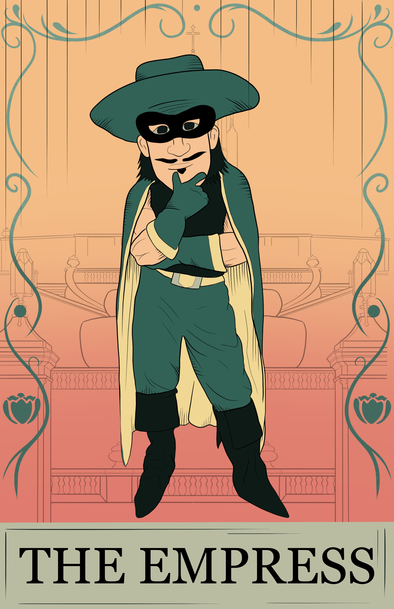
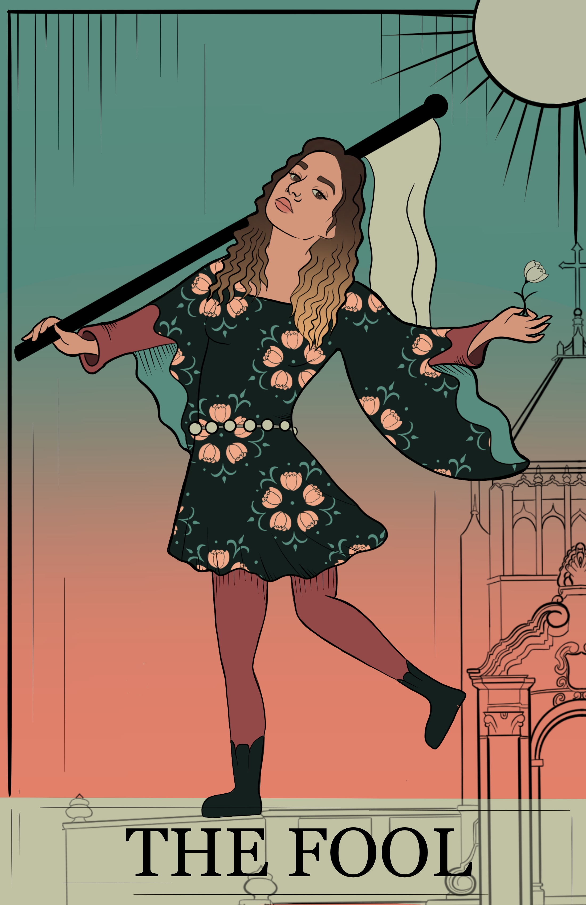

Tattoo You
2023, Adobe Illustrator & Procreate
The premise behind this project was to create a personalized tattoo design. This design depicts a three-eyed tiger head. This piece was inspired by imagery typically seen in tattoo settings, but with a surrealist twist to it. It invites viewers to open their mind’s eye and to perceive more than what is literally seen. The main design principles utilized are symmetry, balance, and color.
 





PSA for USF
2023, Adobe Illustrator & Procreate
This project was required to be a public service announcement about anything to do with college life. This series of posters breaks the conventions of what PSA’s are supposed to look like, and draws direct inspiration from tarot cards to convey the unique culture of University of San Francisco. The Emperor tarot card symbolizes leadership, power and control. So, the dean of USF, Patrick Fitzgerald, is depicted as The Emperor. The Tower tarot card symbolizes danger, crisis, sudden change, destruction, higher learning, and liberation. So, in this project, the tower is depicted by the infamous and dreaded Lone Mountain stairs at USF. The Empress tarot card is associated with The Emperor, and symbolizes the creation of life, romance, art, or business. So, this was represented by the USF mascot, Don Francisco, as a small injection of humor into this project. Lastly, The Fool is meant to symbolize new beginnings, having faith in the future, being inexperienced, not knowing what to expect, having beginner's luck, improvisation and believing in the universe. Thus, this card was represented by a depiction of myself, a student at USF. This project was intended to have multiple meanings, both in a positive and negative view of culture at USF. The viewer is encouraged to apply the meanings of the tarot cards to life at USF, and infer whether this PSA is cautionary or celebratory.

3 Icons of Harvey Milk
2023, Adobe Illustrator
The premise of this project was to create three icons to convey a part of San Francisco’s unique history. This piece draws direct inspiration from San Francisco’s former and LGBTQ+ trailblazer Harvey Milk. The leftmost icon depicts Milk’s iconic megaphone that was used to amplify his advocacy and reach his voice to his audiences. The center icon depicts Harvey Milk himself, as this particular portrait has been rendered in many variations to represent his advocacy, and to literally give a face to his work. The rightmost icon is intended to depict a person walking down the iconic rainbow sidewalk in the Castro, where most of Milk’s work was centered – and is still prominent to this day. All three icons tell a narrative of Milk’s work and his legacy.